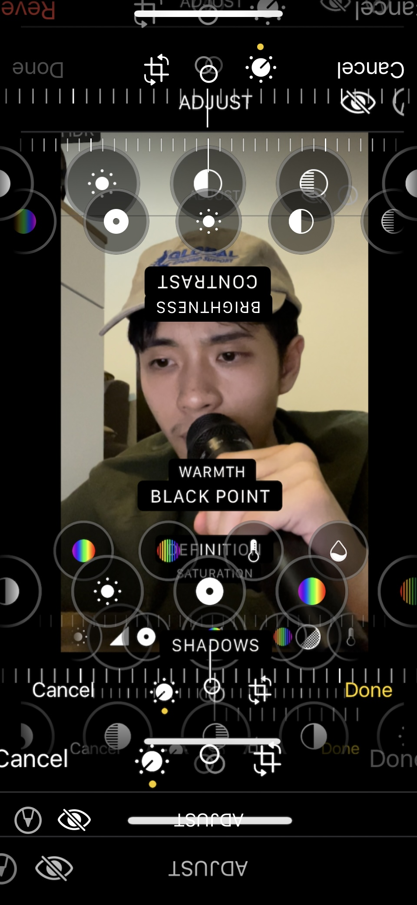
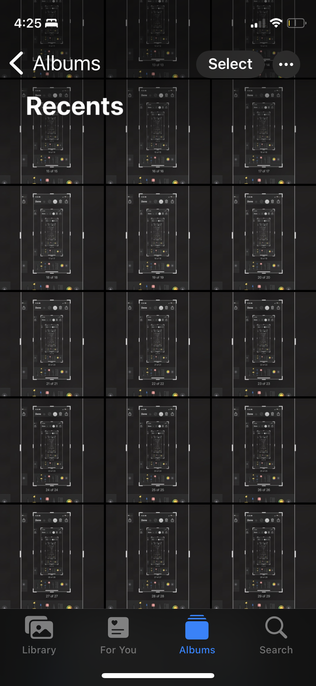
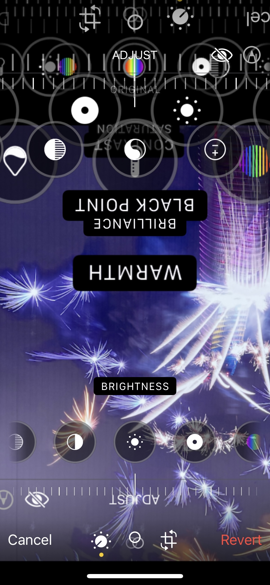
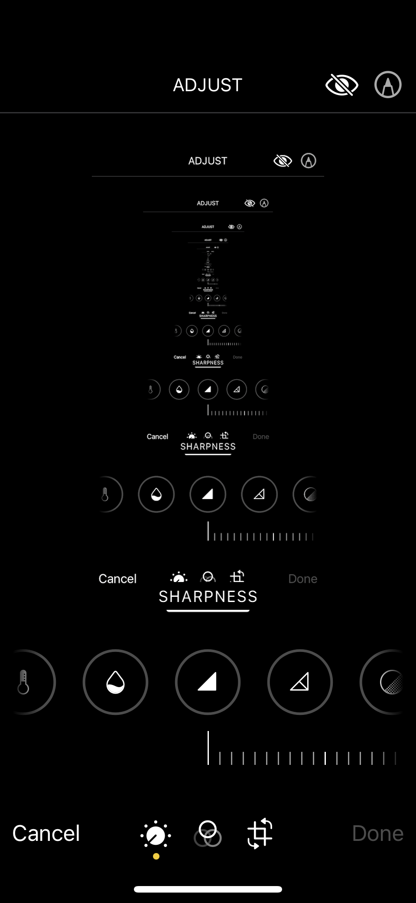
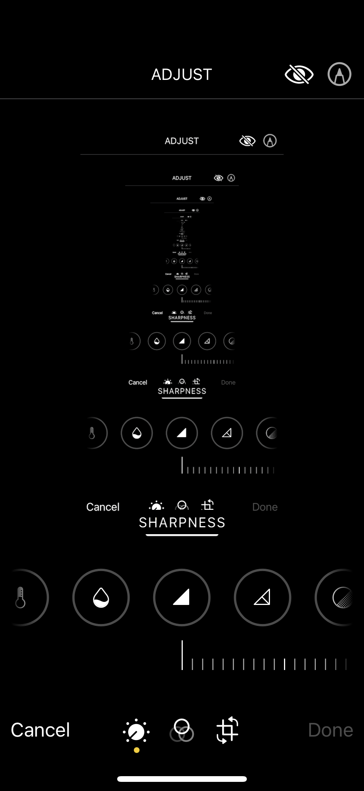
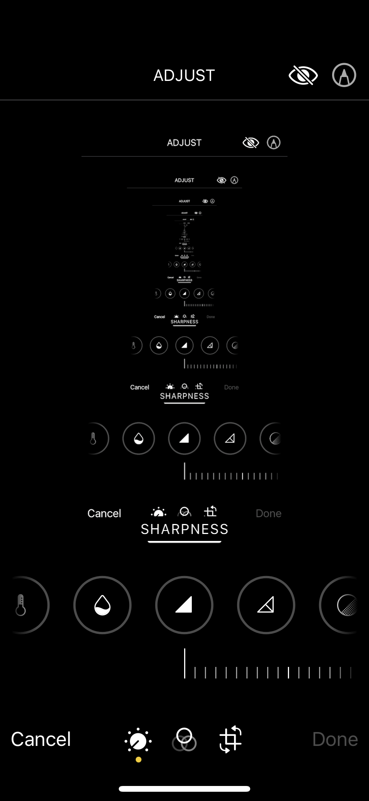

No Filter 😇
- well, no external edits—just many, many iPhone screenshots!
  

!['No filter [Smiling emoji with halo]' panel 4. It's a screenshot of the 'Albums' page in Photos showing a mix of photos similar to those of panels 1 and 3. One larger photo is centered, and then many fractal-like photos are in the background. there's tan & purple, and then the grey and black of the iPhone interface.](stuff/no-filter/IMG_3248.PNG) 
